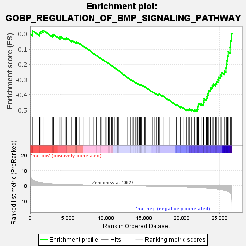
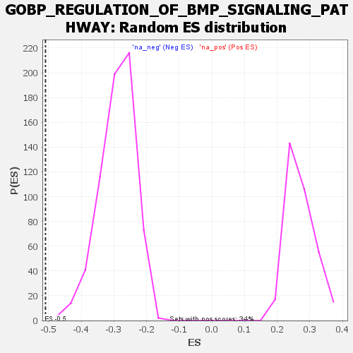

| | | Dataset | wbh_treatment_res_for_gsea |
| Phenotype | NoPhenotypeAvailable |
| Upregulated in class | na_neg |
| GeneSet | GOBP_REGULATION_OF_BMP_SIGNALING_PATHWAY |
| Enrichment Score (ES) | -0.50956833 |
| Normalized Enrichment Score (NES) | -1.7631798 |
| Nominal p-value | 0.0 |
| FDR q-value | 0.13051634 |
| FWER p-Value | 0.91 |
Table: GSEA Results Summary

Fig 1: Enrichment plot: GOBP_REGULATION_OF_BMP_SIGNALING_PATHWAY
Profile of the Running ES Score & Positions of GeneSet Members on the Rank Ordered List
| SYMBOL | RANK IN GENE LIST | RANK METRIC SCORE | RUNNING ES | CORE ENRICHMENT | | 1 | SKI | 326 | 4.323 | 0.0235 | No |
| 2 | FBXL15 | 1264 | 2.404 | 0.0080 | No |
| 3 | XIAP | 1452 | 2.238 | 0.0195 | No |
| 4 | NOTCH1 | 1719 | 2.017 | 0.0261 | No |
| 5 | NUMA1 | 2920 | 1.352 | -0.0080 | No |
| 6 | MIR93 | 3072 | 1.294 | -0.0029 | No |
| 7 | ACVRL1 | 3910 | 1.008 | -0.0262 | No |
| 8 | ABL1 | 3926 | 1.003 | -0.0184 | No |
| 9 | FST | 4131 | 0.938 | -0.0184 | No |
| 10 | TMEM53 | 4647 | 0.801 | -0.0312 | No |
| 11 | MIR140 | 4774 | 0.771 | -0.0296 | No |
| 12 | MIR17 | 4841 | 0.756 | -0.0258 | No |
| 13 | KCNQ1OT1 | 5511 | 0.621 | -0.0459 | No |
| 14 | HTRA1 | 5533 | 0.617 | -0.0416 | No |
| 15 | ENG | 6004 | 0.532 | -0.0549 | No |
| 16 | BMPER | 6102 | 0.515 | -0.0543 | No |
| 17 | SCUBE3 | 6116 | 0.511 | -0.0506 | No |
| 18 | CRB2 | 6557 | 0.438 | -0.0636 | No |
| 19 | NOG | 7088 | 0.364 | -0.0806 | No |
| 20 | HIPK2 | 7754 | 0.281 | -0.1033 | No |
| 21 | MIR210 | 8435 | 0.205 | -0.1273 | No |
| 22 | SOSTDC1 | 8793 | 0.171 | -0.1394 | No |
| 23 | TNFAIP6 | 9321 | 0.120 | -0.1583 | No |
| 24 | SMAD7 | 9377 | 0.116 | -0.1594 | No |
| 25 | NOTCH2 | 9989 | 0.067 | -0.1819 | No |
| 26 | CHRDL1 | 10024 | 0.064 | -0.1826 | No |
| 27 | SMURF1 | 10335 | 0.041 | -0.1940 | No |
| 28 | GDF3 | 10412 | 0.039 | -0.1966 | No |
| 29 | UBE2D3 | 10484 | 0.035 | -0.1989 | No |
| 30 | PPARG | 10717 | 0.014 | -0.2076 | No |
| 31 | TMPRSS6 | 10837 | 0.007 | -0.2120 | No |
| 32 | TOB1 | 11048 | -0.009 | -0.2199 | No |
| 33 | CER1 | 11152 | -0.018 | -0.2236 | No |
| 34 | RBPMS2 | 11431 | -0.035 | -0.2338 | No |
| 35 | SORL1 | 11481 | -0.040 | -0.2353 | No |
| 36 | DAND5 | 11532 | -0.045 | -0.2368 | No |
| 37 | MIR98 | 11608 | -0.051 | -0.2393 | No |
| 38 | SKIL | 12819 | -0.119 | -0.2839 | No |
| 39 | FSTL5 | 13278 | -0.153 | -0.3000 | No |
| 40 | MIR106A | 13558 | -0.174 | -0.3091 | No |
| 41 | MIR100 | 13606 | -0.174 | -0.3094 | No |
| 42 | FOXD1 | 13867 | -0.176 | -0.3178 | No |
| 43 | BMPR2 | 13971 | -0.186 | -0.3201 | No |
| 44 | DKK1 | 14141 | -0.202 | -0.3248 | No |
| 45 | GDF2 | 14344 | -0.220 | -0.3306 | No |
| 46 | HJV | 14419 | -0.226 | -0.3315 | No |
| 47 | MIR20A | 14527 | -0.233 | -0.3336 | No |
| 48 | FSTL3 | 14536 | -0.234 | -0.3320 | No |
| 49 | ILK | 14594 | -0.238 | -0.3322 | No |
| 50 | UBE2O | 14688 | -0.246 | -0.3337 | No |
| 51 | HTRA3 | 15072 | -0.265 | -0.3459 | No |
| 52 | LEMD3 | 15174 | -0.273 | -0.3475 | No |
| 53 | GATA4 | 16066 | -0.342 | -0.3783 | No |
| 54 | ITGA3 | 16468 | -0.374 | -0.3903 | No |
| 55 | FKBP8 | 16660 | -0.391 | -0.3943 | No |
| 56 | VWC2L | 16889 | -0.411 | -0.3995 | No |
| 57 | MIR214 | 16936 | -0.416 | -0.3978 | No |
| 58 | PELO | 16994 | -0.421 | -0.3965 | No |
| 59 | WNT5A | 17045 | -0.426 | -0.3948 | No |
| 60 | MIR302C | 17535 | -0.479 | -0.4093 | No |
| 61 | DLX1 | 18317 | -0.562 | -0.4341 | No |
| 62 | GPC3 | 19288 | -0.696 | -0.4650 | No |
| 63 | FBN1 | 19807 | -0.775 | -0.4781 | No |
| 64 | FZD1 | 20125 | -0.829 | -0.4832 | No |
| 65 | GREM2 | 20657 | -0.920 | -0.4957 | No |
| 66 | UBE2D1 | 20861 | -0.960 | -0.4954 | No |
| 67 | RBPJ | 21001 | -0.987 | -0.4924 | No |
| 68 | SMURF2 | 21307 | -1.054 | -0.4952 | No |
| 69 | SFRP2 | 21688 | -1.144 | -0.5001 | Yes |
| 70 | SPART | 21885 | -1.184 | -0.4977 | Yes |
| 71 | SFRP4 | 22063 | -1.228 | -0.4942 | Yes |
| 72 | TRIM33 | 22100 | -1.242 | -0.4853 | Yes |
| 73 | CTDSPL2 | 22107 | -1.244 | -0.4752 | Yes |
| 74 | FSTL4 | 22150 | -1.255 | -0.4664 | Yes |
| 75 | SULF1 | 22188 | -1.264 | -0.4573 | Yes |
| 76 | MSX2 | 22525 | -1.348 | -0.4589 | Yes |
| 77 | CRIM1 | 22838 | -1.441 | -0.4587 | Yes |
| 78 | GREM1 | 22842 | -1.442 | -0.4469 | Yes |
| 79 | TFAP2B | 22896 | -1.458 | -0.4368 | Yes |
| 80 | TBX20 | 22899 | -1.459 | -0.4248 | Yes |
| 81 | SMAD4 | 23228 | -1.569 | -0.4242 | Yes |
| 82 | WNT1 | 23291 | -1.593 | -0.4133 | Yes |
| 83 | GATA6 | 23355 | -1.616 | -0.4023 | Yes |
| 84 | BAMBI | 23435 | -1.643 | -0.3917 | Yes |
| 85 | PPM1A | 23452 | -1.648 | -0.3787 | Yes |
| 86 | MSX1 | 23547 | -1.677 | -0.3683 | Yes |
| 87 | SOST | 23744 | -1.761 | -0.3612 | Yes |
| 88 | FSTL1 | 23810 | -1.788 | -0.3488 | Yes |
| 89 | HES5 | 23965 | -1.858 | -0.3392 | Yes |
| 90 | LRP2 | 24102 | -1.924 | -0.3284 | Yes |
| 91 | SKOR1 | 24465 | -2.117 | -0.3246 | Yes |
| 92 | MICOS10-NBL1 | 24615 | -2.212 | -0.3119 | Yes |
| 93 | PCSK6 | 24789 | -2.311 | -0.2993 | Yes |
| 94 | SFRP1 | 24893 | -2.384 | -0.2834 | Yes |
| 95 | HES1 | 25064 | -2.510 | -0.2691 | Yes |
| 96 | HOXA13 | 25277 | -2.676 | -0.2549 | Yes |
| 97 | ZNF423 | 25597 | -2.991 | -0.2422 | Yes |
| 98 | NBL1 | 25817 | -3.255 | -0.2235 | Yes |
| 99 | CDH5 | 25865 | -3.342 | -0.1976 | Yes |
| 100 | KDR | 25934 | -3.494 | -0.1713 | Yes |
| 101 | CHRDL2 | 26014 | -3.673 | -0.1438 | Yes |
| 102 | TWSG1 | 26099 | -3.867 | -0.1150 | Yes |
| 103 | SMAD2 | 26354 | -4.755 | -0.0852 | Yes |
| 104 | RNF165 | 26419 | -5.102 | -0.0454 | Yes |
| 105 | SOX11 | 26517 | -6.283 | 0.0030 | Yes |
Table: GSEA details [plain text format]

Fig 2: GOBP_REGULATION_OF_BMP_SIGNALING_PATHWAY: Random ES distribution
Gene set null distribution of ES for GOBP_REGULATION_OF_BMP_SIGNALING_PATHWAY